تحميل السلسلة بصيغة مصورة : PDF
تحميل السلسلة بصيغة نصية: DOCX
تحميل جميع كتب المؤلف بصيغة مصورة : PDF
تحميل جميع كتب المؤلف بصيغة نصية: DOCX
تحاول هذه السلسلة أن تكون موسوعة شاملة لكل الأحاديث التي اصطلحنا على تلقيبها بـ[الأحاديث المقبولة]، وهي الموافقة للقرآن الكريم والعقل والفطرة والواقع، بغض النظر عن مدى صحتها سندا.
ولذلك؛ فإن انتقاءنا لها ليس قائما على أساس الدراسة السندية، والتي قد يقع الخلاف الشديد فيها، وإنما هو قائم على أساس دراسة المتون، وتحليل معانيها، وبيان مدى موافقتها للقرآن الكريم، والقيم التي جاء بها.
وأما غيرها مما لا نرى موافقته لها، فقد خصصنا لها مباحث ومطالب خاصة، تذكرها، وتبين سر رفضنا لها، مع ذكر المصادر التي وردت فيها.
بالإضافة إلى ذلك؛ فقد جمعنا في هذه الموسوعة أكبر عدد من الأحاديث الواردة في المصادر المختلفة للسنة النبوية بغض النظر عن الطائفة التي تنتمي إليها.. ذلك أن السنة المقبولة الموافقة للقرآن الكريم فوق الطوائف والمذاهب.. ولذلك تعاملنا معها مثل التعامل مع القرآن الكريم، والذي هو فوق الطوائف والمذاهب، ولهذا سميناها [سنة بلا مذاهب]
بالإضافة إلى ذلك كله، حاولنا تصنيف الأحاديث بحسب مواضيعها إلى ما يتناسب مع الواقع الفكري الجديد الذي نعيش فيه، وذلك على خلاف التصنيفات السابقة، والتي كانت تخضع إلى الأبواب الفقهية أو العقدية أو غيرها.
وقد خصصنا جزءا من السلسلة لكل تصنيف يشمل مواضيع ذات روابط واحدة، وذلك حتى لا يتحول الكتاب إلى أجزاء يصعب التعامل معها إلا للمختصين؛ فهذه السلسلة موجهة لعامة الناس، وليس للمتخصصين فقط، ذلك أنها تحاول أن تقرب إليهم السنة النبوية، وبطريقة بسيطة.
بالإضافة إلى ذلك كله، حاولنا أن نجيب عن الشبهات المرتبطة ببعض الأحاديث التي يصعب تقبلها أو فهمها، لنبين مدى موافقتها للعقل والفطرة السليمة.
الكتاب: منابع الهداية الصافية
الوصف: الأحاديث الواردة حول الكتاب والسنة وكيفية التعامل معهما
السلسلة: سنة بلا مذاهب
المؤلف: أ.د. نور الدين أبو لحية
الناشر: دار الأنوار للنشر والتوزيع
الطبعة: الأولى، 1441 هـ
عدد الصفحات: 302
للمطالعة: هنا
لمطالعة الكتاب من تطبيق مؤلفاتي المجاني وهو أحسن وأيسر: هنا
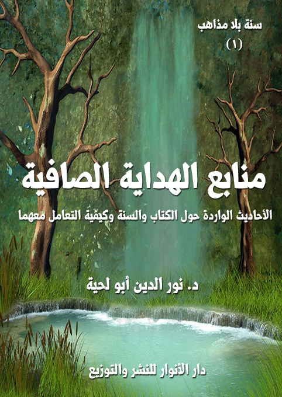
التعريف بالكتاب
يحاول هذا الكتاب ـ كسائر أجزاء السلسلة ـ التمييز بين الأحاديث التي تتوافق وتتناسب مع المعاني والحقائق القرآنية، وغيرها من الأحاديث التي استعملت وسيلة لضربها وتشويهها وتحريفها، سواء ما ورد من ذلك في المصادر السنية أو الشيعية.
هو يقتصر على الأحاديث المرتبطة بمنابع الهداية الكبرى، والتي نص عليها قوله تعالى: {وَأَنْزَلْنَا إِلَيْكَ الذِّكْرَ لِتُبَيِّنَ لِلنَّاسِ مَا نُزِّلَ إِلَيْهِمْ} [النحل: 44]
وهي تشير إلى أن رسول الله صلى الله عليه وآله وسلم كلف بوظيفتين مرتبطتين بالهداية: إحداهما نقل الوحي الإلهي كما أنزل إليه إلى أمته، والثانية بيانه وتوضيحه وشرح كيفية تنفيذه.
وبذلك، فإن الأحاديث الواردة في هذا الباب في المصادر الحديثية المختلفة يمكن تصنيفها إلى صنفين:
أولهما: الأحاديث الواردة في فضل القرآن الكريم، وبيان ضرورة اتباعه، وأنه لا يمكن التحقق بالإسلام إلا من خلاله.
ثانيهما: الأحاديث الواردة في فضل السنة المطهرة، وأنها لا تقل عن القرآن الكريم من حيث وجوب الاتباع، ولو أنها تليه عند التنازع.
وقد خصصنا كل صنف بفصل خاص، جمعنا فيه نوعين من الأحاديث:
1. الأحاديث المقبولة لموافقتها للقرآن الكريم.
2. الأحاديث المردودة لمعارضتها له، مع بيان سبب المعارضة.
الكتاب: الإمامة والامتداد الرسالي
الوصف: الأحاديث الواردة حول الإمامة والفتن التي تعترضها
السلسلة: سنة بلا مذاهب
المؤلف: أ.د. نور الدين أبو لحية
الناشر: دار الأنوار للنشر والتوزيع
الطبعة: الأولى، 1441 هـ
عدد الصفحات: 517
للمطالعة: هنا
لمطالعة الكتاب من تطبيق مؤلفاتي المجاني وهو أحسن وأيسر: هنا
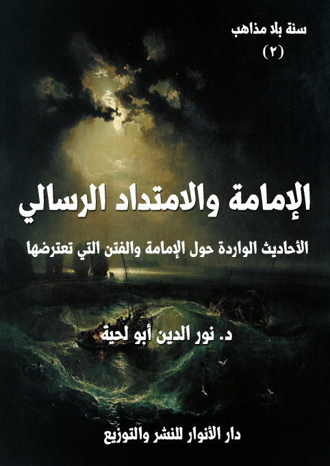
التعريف بالكتاب
يحاول هذا الكتاب جمع ما ورد من الأحاديث في المصادر السنية والشيعية حول الإمامة والامتداد الرسالي، والتي تتوافق مع ما ورد في القرآن الكريم من:
1 ـ أن من مقتضيات عناية الله تعالى بعباده، باعتباره ربهم وهاديهم، توفير كل أسباب الهداية التي تحميهم من الضلالة، ومن التحريف الذي يلحق الأديان بعد وفاة الأنبياء عليهم السلام، وأن الذين يقومون بذلك يُطلق عليهم [الأئمة]، أو [أئمة الهدى]، أو [الخلفاء]، أو [الورثة]، أو [الهداة]
2 ـ أن أتباع الأنبياء يفترقون في مواقفهم من أولئك الأئمة الهداة الذين استخلفهم أنبياؤهم عليهم، وأوصوهم بهم؛ فبينما يطبق بعضهم تلك الوصايا، ويحرص عليها، بينما يخالف آخرون، تلك الوصايا، ويرتضون لأنفسهم أئمة بدلهم، لكن ذلك لا يعني اندراس الدين الأصيل، لأن في ذلك فتنة كبرى، تجعل البشر محرومين من الهداية الإلهية الصافية.. فلذلك لا يخلوا عصر من العصور من المتمسكين بالدين الحقيقي، وأتباع أئمة الهدى.
3 ـ أن الأصل في إمامة الأئمة ووراثتهم أن تكون شاملة لكل الجوانب التي يرتبط بها الدين سواء تعلقت بالقضايا الدينية البحتة، أو تعلقت بالجوانب الحياتية ابتداء من الجانب السياسي.. ذلك أنهم يمثلون الهداية النبوية ويطبقونها في تلك الجوانب، لكن النصوص الكثيرة تشير إلى أن إمامة الأئمة للجانب السياسي تفتقر للقابلية الشعبية؛ فإن لم تتحقق، أو رغب الناس عن حكم الأئمة لهم؛ فإن ذلك يعفيهم من هذا الجانب، ليبقى الجانب الأساسي، وهو جانب الهداية والتوجيه والبلاغ عن الله وتوضيح حقائق الدين في كل الجوانب بما فيها الجانب السياسي.
الكتاب: المواعظ والوصايا
الوصف: ألفا حديث من جوامع كلم النبوة والإمامة
السلسلة: سنة بلا مذاهب
المؤلف: د. نور الدين أبو لحية
الناشر: دار الأنوار للنشر والتوزيع
الطبعة: الأولى، 1441 هـ
عدد الصفحات: 475
الكتاب موافق للمطبوع
للمطالعة: هنا
لمطالعة الكتاب من تطبيق مؤلفاتي المجاني وهو أحسن وأيسر: هنا
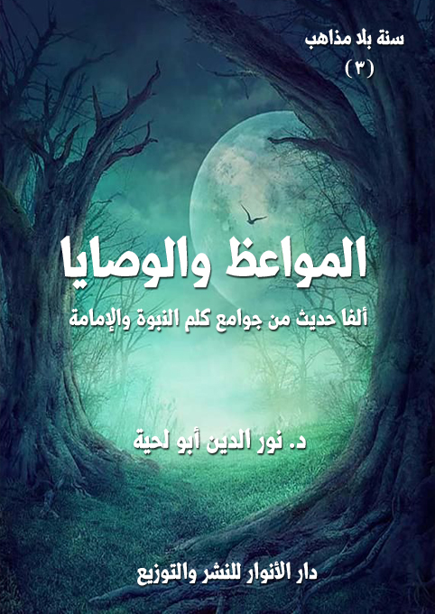
التعريف بالكتاب
يضم هذا الكتاب ألفي حديث من أحاديث المواعظ والوصايا، والتي يدخل أكثرها فيما أشار إليه رسول الله صلى الله عليه وآله وسلم في قوله: (أعطيت جوامع الكلم، واختصر لي الكلام اختصارا)
وقد دفعنا إلى تخصيصه بهذا الجزء، وبهذا الترتيب، أنا رأينا أن المواعظ والوصايا والأحاديث الواردة بشأنها من أحسن المصادر التي يتحقق بها معنيان، كلاهما وردت بها الشريعة، ودل عليه العقل:
أما الأول؛ فهو دورهما في تحقيق الهداية والصلاح والتقوى، ذلك أنهما يرققان القلوب، ويوفران لها القابلية لتقبل التعاليم الإلهية، ولذلك لا يصح أن تُقدم الفروع عليها، فالفروع لا تنبني إلا على الأصول.
وأما الثاني؛ فدورهما فيما تهدف إليه هذه السلسلة، وهو تحقيق الوحدة الإسلامية، وذلك بسبب اشتمالها على القضايا الكلية والكبرى التي جاءت بها الأديان جميعا دون الخوض في تفاصيل الفروع، والتي يقع الخلاف فيها عادة بين الأديان والمذاهب.
وبناء على هذا كان هذا الكتاب، الذي يشمل مواعظ ووصايا النبوة والإمامة من أحسن المصادر الحديثية التي تجمع الأمة.. ذلك أن الأحاديث الواردة فيه تشكل القواسم المشتركة الكبرى التي تتفق عليها الأمة بمدارسها جميعا.
بل إنها تشكل القواسم الكبرى التي جاء الأنبياء والأديان جميعا لتحقيقها في الواقع، كما أشار الله تعالى إلى ذلك عند ذكره لوصاياه لأنبيائه وللبشرية.
الكتاب: الجلال والجمال الإلهي
الوصف: ألف حديث حول المعارف الإلهية السامية
السلسلة: سنة بلا مذاهب
المؤلف: أ.د. نور الدين أبو لحية
الناشر: دار الأنوار للنشر والتوزيع
الطبعة: الأولى، 1441 هـ
عدد الصفحات: 425
الكتاب موافق للمطبوع
للمطالعة: هنا
لمطالعة الكتاب من تطبيق مؤلفاتي المجاني وهو أحسن وأيسر: هنا
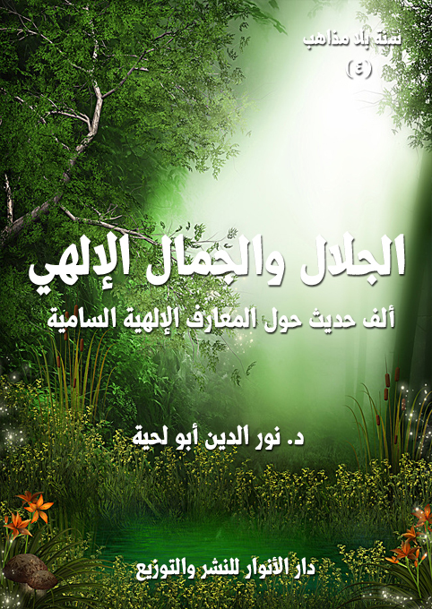
التعريف بالكتاب
يضم هذا الكتاب ألف حديث من الأحاديث التي تعرف بجلال الله تعالى وجماله وصفاته وأسمائه الحسنى، وكل المعارف السامية المرتبطة بذلك، والموافقة للقرآن الكريم، وهو يهدف إلى أمرين:
الأول: تثبيت الحقائق القرآنية في النفس وتقريرها عبر الكلمات النورانية لرسول الله صلى الله عليه وآله وسلم وأئمة الهدى، والذين هم أعرف الخلق بالله، وأعظمهم هداية ودلالة عليه.
الثاني: الرد على كل التحريفات التي طالت العقيدة في الله بسبب تغليب المتشابه على المحكم، والتصور والتوهم على العقل، وأئمة الضلالة على أئمة الهدى، مما مكّن من الخرافة والتجسيم والتشبيه والجبر وكل أنواع الضلالة من الدخول إلى هذه العقيدة الأساسية من الدين، وتحويلها عن معانيها القرآنية إلى معان أقرب إلى الوثنية منها إلى الإسلام.
ولذلك فإن هذا الكتاب هو البديل السليم لكل تلك المتون العقدية التي ناء بها ظهر التراث العقدي الإسلامي، والذي اقتصر الكثير منه على شرحها وتقريرها معرضا عن تلك الكلمات النيرة الجميلة لرسول الله صلى الله عليه وآله وسلم وأئمة الهدى.. والتي هي النور الخالص الذي أهداه الله تعالى لخلقه ليكون وسيلتهم إليه.
الكتاب: الأنبياء والهدي المقدس
الوصف: الأحاديث والآثار الواردة حول الأنبياء والوحي المنزل عليهم
السلسلة: سنة بلا مذاهب
المؤلف: أ.د. نور الدين أبو لحية
الناشر: دار الأنوار للنشر والتوزيع
الطبعة: الأولى، 1441 هـ
عدد الصفحات: 378
الكتاب موافق للمطبوع
للمطالعة: هنا
لمطالعة الكتاب من تطبيق مؤلفاتي المجاني وهو أحسن وأيسر: هنا
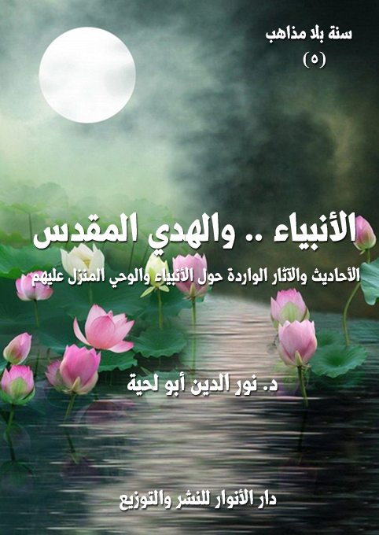
التعريف بالكتاب
يحاول هذا الكتاب جمع ما ورد من الأحاديث الموافقة للقرآن الكريم حول الركن الثاني من أركان الإيمان، وهو الإيمان بالرسل عليهم الصلاة والسلام، والوحي الذي أنزله الله عليهم.
ذلك أن الإيمان بالرسل عليهم السلام هو المقدمة التي تنطلق منها جميع المعارف الدينية سواء تلك التي ترتبط بالغيب، أو تلك التي ترتبط بالشهادة.. فقد شاء الله أن يربط تعليمه لعباده وتربيته لهم وتعريفهم بحقائق أنفسهم وحقائق الوجود عبر هذه الوسيلة التي لا يمكن أن تتحقق من دون الإيمان بهم والإذعان إليهم والتسليم لهم.
ولهذا امتلأ القرآن الكريم بذكرهم وذكر هديهم ومعاناتهم مع أقوامهم، ليكون ذلك عبرة للمعتبرين، وطريقا من طرق الهداية العظمى.
لكن ـ للأسف ـ وبسبب البعد عن المنهج القرآني في التعامل مع النبوة والوحي الإلهي، دخلت الكثير من التحريفات والأساطير إلى هذا الركن من أركان الإيمان؛ فشوهت النبوة، ودنس معها الهدي المقدس، ليمتلئ بمعان وقيم غريبة تتناقض مع ما ورد في القرآن الكريم، وما دلت عليه الفطرة السليمة.
ولهذا حرصنا في هذا الكتاب على إبعاد كل الأحاديث التي نرى تأثيرها السلبي على تلك المعاني القرآنية السامية التي تملأ القلوب شوقا ومحبة لتلك الجواهر المقدسة التي رضيها الله تعالى هداة ودعاة ومعلمين لخلقه.
المعاد .. والرحمة والعدالة
الكتاب: المعاد .. والرحمة والعدالة
الوصف: الأحاديث الواردة حول المعاد وموازينه وقيمه
السلسلة: سنة بلا مذاهب
المؤلف: د. نور الدين أبو لحية
الناشر: دار الأنوار للنشر والتوزيع
الطبعة: الأولى، 1441 هـ
عدد الصفحات: 333
الكتاب موافق للمطبوع
للمطالعة: هنا
لمطالعة الكتاب من تطبيق مؤلفاتي المجاني وهو أحسن وأيسر: هنا
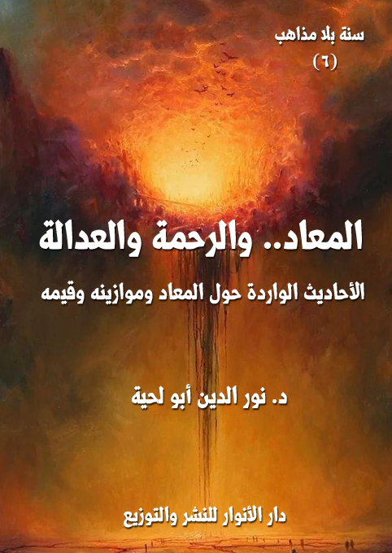
يحاول هذا الكتاب جمع ما ورد من الأحاديث الموافقة للقرآن الكريم حول الإيمان بالمعاد، وهو من الأركان الأساسية الكبرى للدين، والذي لا يرتبط بالحقائق العقدية فقط، وإنما له تأثيره الكبير في السلوك والتربية.
وقد رأينا من خلال ما ورد في القرآن الكريم من الآيات المرتبطة بالمعاد، أنها تحوي ـ بسبب مزجها بين المعارف العقدية والقيم السلوكية ـ قيمتين كبيرتين اعتبرنا كل واحدة منهما ضابطا من الضوابط الكبرى للأحاديث المقبولة:
أولاهما: أن المعاد مرتبط بالدرجة الأولى بالعدالة الإلهية، ولذلك ينتصر الله تعالى فيه للمظلومين على الظالمين، وينال كل عامل جزاء عمله، حسنا كان أو قبيحا، ولهذا وُضعت الموازين والصراط، وفُرق بين جزاء المؤمنين وغيرهم، بل على أساس ذلك كانت الجنة درجات تتفاوت بحسب أعمال الصالحين، والنار دركات تتفاوت بحسب جرائم المنحرفين.
ثانيهما: أن المعاد مرتبط بالرحمة الإلهية، ولذلك كان المعاد ـ ابتداء من الموت ـ هو المحل الذي يسعد فيه المؤمنون، ويلقون من عظيم العناية الإلهية ما يملؤهم محبة له.
وبناء على هذا؛ فقد قبلنا كل الأحاديث التي تصور بعض مظاهر رحمة الله تعالى بعباده الصالحين إما حال الموت، أو عند البرزخ، أو عند النشر والحشر، أو عند الجزاء، لما لتلك الأحاديث من تأثير تربوي كبير؛ فهي ترغب في الأعمال الصالحة، مثلما ترهب العدالة الإلهية من الانحرافات، وما تعلق بها.
دلائل النبوة الخاصة
الوصف: الأحاديث والآثار الواردة حول الدلائل الحسية للنبوة
السلسلة: سنة بلا مذاهب
المؤلف: د. نور الدين أبو لحية
الناشر: دار الأنوار للنشر والتوزيع
الطبعة: الأولى، 1441 هـ
عدد الصفحات: 285
الكتاب موافق للمطبوع
للمطالعة: هنا
لمطالعة الكتاب من تطبيق مؤلفاتي المجاني وهو أحسن وأيسر: هنا
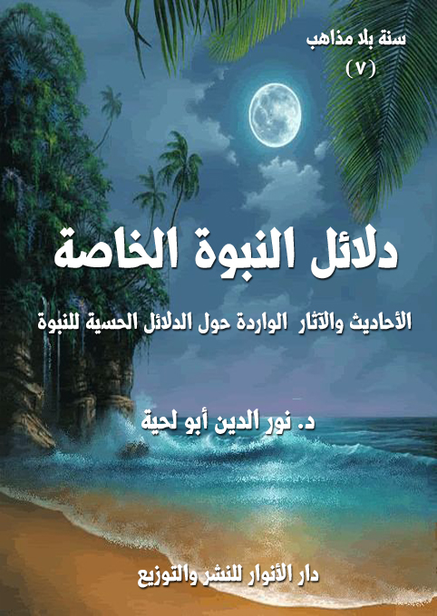
يحاول هذا الكتاب جمع ما أمكن من الأحاديث التي يمكن قبولها حول ما أطلقنا عليه [دلائل النبوة الخاصة]، وذلك من خلال المصادر السنية والشيعية.
ولا نقصد بدلائل النبوة الخاصة تلك التي تفرق بينها وبين الأدلة العامة، والتي تعنى بالبحث في البراهين العقلية على النبوة، كالاستدلال بالعناية والرعاية والهداية الإلهية وغيرها، وإنما نقصد مجموعة أمور:
أولها: تلك الخاصة بإثبات رسالة رسول الله صلى الله عليه وآله وسلم .. ذلك أن لكل نبي براهينه وأدلته الخاصة به، والتي تناسب الأقوام الذين أرسل إليهم، ولم نذكر كل تلك الأدلة هنا، لأنه يصعب إحصاؤها، وإنما ذكرنا أنواعا خاصة منها.
ثانيها: تلك الخاصة بعصر الرسالة، ذلك أن الله تعالى بكرمه ورحمته بخلقه أتاح لرسول الله صلى الله عليه وآله وسلم أن يظهر بعض الخوارق لقومه حتى يؤمنوا وتزول عنهم الشبهات والإشكالات.
ثالثها: تلك الخاصة بالذين يؤمنون بالخوارق الحسية المتعلقة بالأنبياء عليهم السلام، أو من سار على هديهم من ورثتهم من أئمة الهدى أو غيرهم من الصالحين، ولا يرون في ذلك أي غضاضة، ذلك أن إيمانهم بقدرة الله المطلقة يجعلهم لا يستغربون أي خارق من الخوارق، وخاصة إن دل عليه الدليل .. ذلك أن النبوة نفسها أعظم الخوارق.
شمائل النبوة ومكارمها
الكتاب: شمائل النبوة ومكارمها
الوصف: أكثر من ألفي حديث في التعريف بالنبوة وجمالها
السلسلة: سنة بلا مذاهب
المؤلف: د. نور الدين أبو لحية
الناشر: دار الأنوار للنشر والتوزيع
الطبعة: الأولى، 1441 هـ
عدد الصفحات: 452
الكتاب موافق للمطبوع
للمطالعة: هنا
لمطالعة الكتاب من تطبيق مؤلفاتي المجاني وهو أحسن وأيسر: هنا
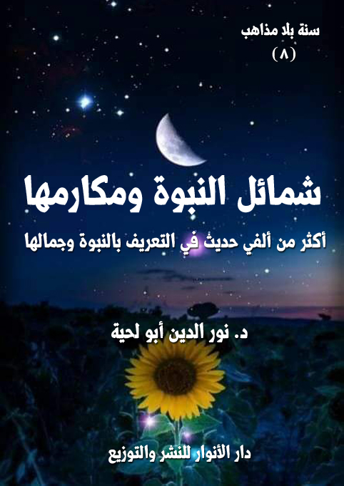
يحاول هذا الكتاب جمع ما ورد في المصادر الحديثية مما يطلق عليه اصطلاحا [الشمائل النبوية]، والتي خصها الكثير من المحدثين بمؤلفات خاصة، وذلك للدوافع التالية:
1. التعريف برسول الله صلى الله عليه وآله وسلم، وكمالاته، ومحاسنه، وعظمته، لأنه لا يمكن أن يتحقق التدين الصحيح من دون ذلك؛ فرسول الله صلى الله عليه وآله وسلم هو المثال الأعلى للإسلام، والممثل الأعظم له، والناطق الأكبر باسمه، ولذلك كلما كانت المعرفة به أعظم، كانت المعرفة بالإسلام أكمل وأشمل وأجمل.
2. الاستدلال بكمالاته على نبوته؛ فأعظم دليل على النبوة تلك الخلال العظيمة التي كان يتصف بها رسول الله صلى الله عليه وآله وسلم .. لذلك كان التعريف به كافيا وحده للدلالة عليه.
3. الدعوة إلى محبته وإقامة علاقة عاطفية قوية معه؛ فبقدر تلك العلاقة يكون التحقق الجواني بالدين .. فالدين في جوهره مبني على المحبة، والمحبة ـ كما هو معلوم ـ لا يمكن أن تنتشر في القلب ما لم تتحقق قبلها المعرفة والتعظيم؛ فالحب ثمرة المحبة والإعجاب بالمحبوب وبصفاته وكمالاته.
4. تحقيق الأسوة به، وهي نتاج بديهي للمحبة، فمن أحب قوما أطاعهم، واتبعهم، وسار على منهاجهم.
5. تنقية ما ورد في كتب الشمائل مما لا يتناسب مع عظمة رسول الله صلى الله عليه وآله وسلم، من الأحاديث أو الآثار وغيرها، بالإضافة إلى طرحها طرحا يتناسب مع تلك الأهداف السابقة.
6. بيان اتفاق الأمة على أحاديث الشمائل؛ فمن خلال اطلاعنا على كل ما ورد من الأحاديث في كتب السنة والشيعة، لم نجد خلافا، ولو في حديث واحد.
7. التقديم بهذا الكتاب لغيره من كتب السلسلة، والمتضمنة للنواحي السلوكية والأخلاقية والتعبدية، وغيرها من المعاني التي وردت بها السنة، ذلك أن الغرض منها جميعا هو السير التحققي والتخلقي على السراط المستقيم الذي سنه رسول الله صلى الله عليه وآله وسلم، وشرحه أئمة الهدى من بعده.
موازين الهداية ومراتبها
الكتاب: موازين الهداية ومراتبها
الوصف: الأحاديث الواردة حول أصناف المهتدين وأوصافهم
السلسلة: سنة بلا مذاهب
المؤلف: د. نور الدين أبو لحية
الناشر: دار الأنوار للنشر والتوزيع
الطبعة: الأولى، 1441 هـ
عدد الصفحات: 315
الكتاب موافق للمطبوع
للمطالعة: هنا
لمطالعة الكتاب من تطبيق مؤلفاتي المجاني وهو أحسن وأيسر: هنا
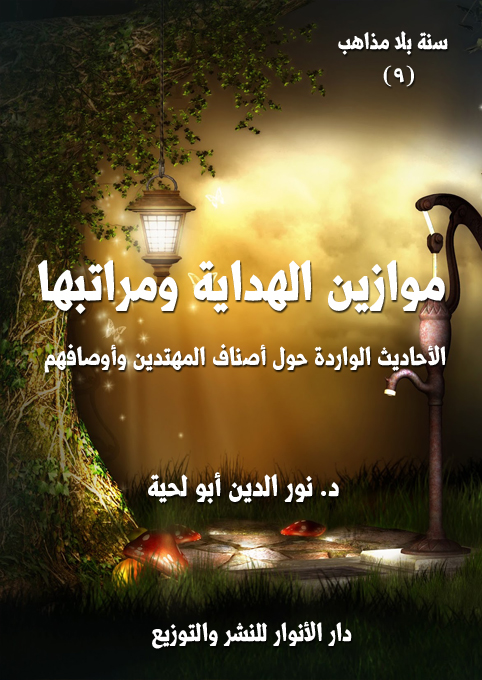
التعريف بالكتاب
يجمع هذا الكتاب أكثر ما ورد في المصادر السنية والشيعية حول [موازين الهداية ومراتبها]، ونقصد بها أمرين:
أولهما: المعاني والقيم التي لا يتحقق بالهداية الصافية الخالصة إلا من توفرت فيه، سواء كان ذلك في الجانب العقدي والمعرفي، أو في الجانب السلوكي العملي منه والذوقي، وهو ما يمكن أن نطلق عليه لقب [موازين الهداية]
ثانيهما: المراتب التي تتحقق بها تلك الموازين أثناء الأداء العملي لها؛ ذلك أن للهداية الإلهية ـ بحسب ما ورد في النصوص الكثيرة ـ مرتبتان: دنيا، وهي ما يطلق عليه لقب [الإسلام]، وعليا، وهي مراتب كثيرة، يطلق عليها لقب [الإيمان]، و[الإحسان] وغيرها، وهو ما يشير إليه القرآن الكريم عند التفريق بين أهل اليمين، والمقربين.. فالعدالة الإلهية ترفض التسوية بين الذين بذلوا نفوسهم لله، وعاشوا حياتهم في صحبته، وفي تنفيذ أوامره، وبين أولئك المقصرين الذين اكتفوا بالحد الأدنى من الدين.
والغرض من هذا الرد على تلك الدعاوى العريضة التي تجعل الانتساب للإسلام أو الإيمان أو الولاية شيئا سهلا بسيطا، يتحقق بأدنى مجاهدة، ولكل الناس، حتى أولئك المنحرفين عن كل قيم الدين.. وهو ما تبناه المرجئة في كل الأجيال، والذين يكتفون من الدين بالدعاوى التي لا دليل عليها.
السلوك الروحي ومنازله
الكتاب: السلوك الروحي ومنازله
الوصف: أكثر من ثلاثة آلاف حديث حول القيم الروحية ومراتبها وموازينها
السلسلة: سنة بلا مذاهب
المؤلف: د. نور الدين أبو لحية
الناشر: دار الأنوار للنشر والتوزيع
الطبعة: الأولى، 1441 هـ
عدد الصفحات: 594
الكتاب موافق للمطبوع
للمطالعة: هنا
لمطالعة الكتاب من تطبيق مؤلفاتي المجاني وهو أحسن وأيسر: هنا
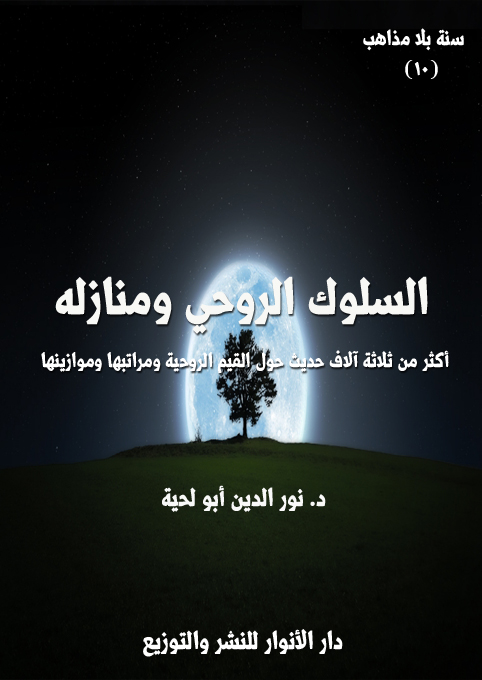
يجمع هذا الكتاب أكثر من 3000 حديث من المصادر السنية والشيعية حول [السلوك الروحي ومنازله]، ونقصد به ما ورد من الأحاديث في العلاقة مع الله، وتهذيب النفس لتصبح أهلا لتلك العلاقة.
وبهذا الكتاب يبدأ القسم الثاني من هذه السلسلة، ذلك أن القسم الأول منها [الأجزاء التسعة الأولى] كان مرتبطا بالحقائق والموازين والمفاهيم وغيرها مما لا علاقة مباشرة له بالعمل، أما هذا القسم [الأجزاء الإحدى عشر]؛ فهو مرتبط بالقيم والأعمال المتعلقة بها.
وبما أن أشرف الأعمال السلوك إلى الله تعالى؛ فقد بدأنا هذه القسم بالأحاديث المرتبطة به، ذلك أن من حسنت علاقته مع الله، تطهرت نفسه، وزكت، وأصبحت أهلا لكل المكارم.
وهذه عناوين المنازل التي احتواها الكتاب:
1. الإخلاص والنية 2. التوبة والإنابة 3. الورع والتقوى 4. المجاهدة والمرابطة 5. العبودية والعبادة 6. الخوف والخشية 7. الرجاء وحسن الظن 8. الصبر والرضا 9. الحمد والشكر 10. المعرفة واليقين 11. التسليم والتوكل 12. الزهد والقناعة 13. الحبّ والمودة 14. الولاية والولاء.
مكارم الأخلاق وفضائلها
الكتاب: مكارم الأخلاق وفضائلها
الوصف: أكثر من ثلاثة آلاف حديث حول الأخلاق الحسنة والترغيب فيها
السلسلة: سنة بلا مذاهب
المؤلف: د. نور الدين أبو لحية
الناشر: دار الأنوار للنشر والتوزيع
الطبعة: الأولى، 1442 هـ
عدد الصفحات: 503
الكتاب موافق للمطبوع
صيغة: pdf
صيغة: docx
للمطالعة: هنا
لمطالعة الكتاب من تطبيق مؤلفاتي المجاني وهو أحسن وأيسر: هنا
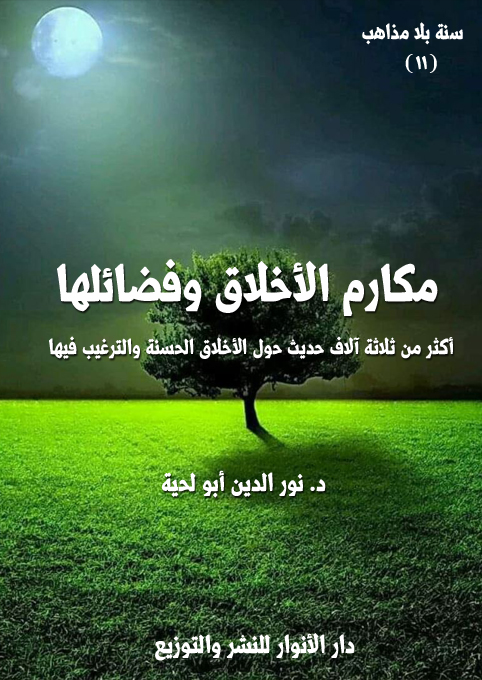
التعريف بالكتاب
يجمع هذا الكتاب أكثر من 3000 حديث من المصادر السنية والشيعية حول [مكارم الأخلاق وفضائها]، ونقصد بها ما ورد من الأحاديث في الأخلاق الحسنة، أو الصفات النفسية الراسخة التي تصدر عنها المواقف والأعمال الصالحة بسهولة ويسر.
وسر ترتيبه بعد الكتاب السابق المرتبط بالسلوك الروحي هو كون الأخلاق الحسنة هي الثمرة الأولى لذلك السلوك؛ فمن عرف ربه، وتواصل معه، رزقه الله من الأدب والأخلاق، ما يكون دليلا على ذلك التواصل.
ولهذا كان القرآن الكريم كله كتاب أخلاق، حتى آياته المرتبطة بالأحكام الفقهية، أو بالقصص، أو بالتعريف بالله تعالى؛ فكل ذلك مما يثمر في التالي المتدبر له المعاني العميقة المرتبطة بالأخلاق.
ولهذا كان في الرجوع إلى النبوة والإمامة في هذا المجال توضيحا لتلك المعاني القرآنية الجميلة، أو تجسيد لها؛ وذلك ما ييسر ترسيخها في النفس؛ فهي تفر من كل شيء نظري مجرد ما لم يكن له في الواقع ما يثبته أو يدل عليه.
بناء على هذا حاولنا أن نجمع في هذا الكتاب أكثر ما ورد في المصادر السنية والشيعية من الأحاديث المرتبطة بالأخلاق الحسنة.
مساوئ الأخلاق وعواقبها
الكتاب: مساوئ الأخلاق وعواقبها
الوصف: أكثر من 3500 حديث حول الأخلاق السيئة والتحذير منها
السلسلة: سنة بلا مذاهب
المؤلف: د. نور الدين أبو لحية
الناشر: دار الأنوار للنشر والتوزيع
الطبعة: الأولى، 1442 هـ
الكتاب موافق للمطبوع
للمطالعة: هنا
لمطالعة الكتاب من تطبيق مؤلفاتي المجاني وهو أحسن وأيسر: هنا
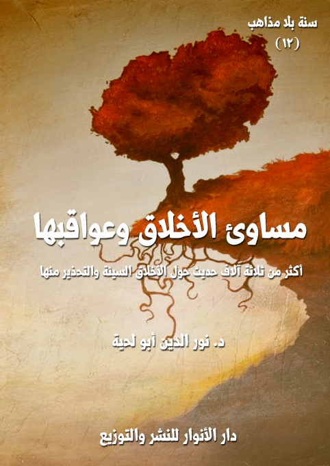
يجمع هذا الكتاب أكثر من 3500 حديث من المصادر السنية والشيعية حول [مساوئ الأخلاق وعواقبها]، ونقصد بها ما ورد من الأحاديث في الأخلاق السيئة، أو الصفات النفسية الراسخة التي تصدر عنها المواقف السلبية، والأعمال الفاسدة، سواء تلك التي بين العبد ونفسه، أو بين العبد وكل ما يربطه مع غيره من علاقات، ابتداء من علاقته بربه.
وسر ترتيبه بعد الكتاب السابق المرتبط بالأخلاق الحسنة هو أن الساعي لتحلية نفسه بتلك الأخلاق ساع في الحقيقة لتخلية نفسه من كل ما يتناقض معها من الأخلاق السيئة، لأن التحلية هي عين التخلية.
ولكن مع ذلك؛ فإن العلم بالأخلاق السيئة، وردع النفس عنها ضروري، حتى تكتمل التزكية بمعانيها المختلفة، بما فيها تلك الشوائب التي قد تعتري الأخلاق الحسنة؛ فتفسدها، وتضر بها.
ولهذا نرى القرآن الكريم يشير إلى تلك الأخلاق السيئة، بل كيف طبعت أكثر النفوس عليها، ويبين أن فلاح الإنسان لا يكون إلا بتطهير نفسه منها، كما قال تعالى: ﴿وَنَفْسٍ وَمَا سَوَّاهَا فَأَلْهَمَهَا فُجُورَهَا وَتَقْوَاهَا قَدْ أَفْلَحَ مَنْ زَكَّاهَا وَقَدْ خَابَ مَنْ دَسَّاهَا﴾ [الشمس: 7-10]
الكتاب: أحكام الحياة الشخصية
الوصف: أكثر من ثلاثة آلاف حديث حول ضرورات الحياة الخاصة ومتطلباتها
السلسلة: سنة بلا مذاهب
المؤلف: د. نور الدين أبو لحية
الناشر: دار الأنوار للنشر والتوزيع
الطبعة: الأولى، 1442 هـ
الكتاب موافق للمطبوع
عدد الصفحات: 590
صيغة: PDF
صيغة: DOCX
للمطالعة: هنا
لمطالعة الكتاب من تطبيق مؤلفاتي المجاني وهو أحسن وأيسر: هنا
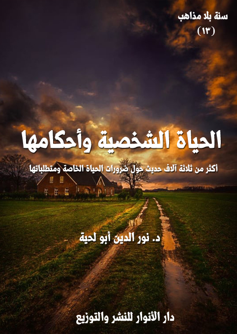
يجمع هذا الكتاب أكثر من 3500 حديث نراه موافقا للقرآن الكريم في شؤون الحياة الخاصة ومتطلباتها، وهو بداية لما بقي من أجزاء هذه السلسلة، والتي تتعرض جميعا للأحاديث الخاصة بالأحكام الفقهية، وما يقرب منها أو يرتبط بها من أحاديث الآداب ونحوها.
وقد قسمت هذا الكتاب بناء على متطلبات الحياة الخاصة إلى خمسة أقسام:
1. العلم والأدب: باعتباره الركن الأساسي للحياة بجميع مجالاتها، وقد جعلته مقدمة للكتب المتبقية باعتبار أن العلم بأكثر الأحكام الواردة فيها فريضة لا يسع المؤمن جهلها.
2. الغذاء والدواء: وتناولت فيه الأحاديث الواردة في آداب الأكل والشرب، والأحكام المرتبطة بما يحل من المأكولات والمشروبات، وما يحرم منها، بالإضافة إلى ما ورد في أحكام التداوي وآدابه.
3. الطهارة والزينة: وتناولت فيه الأحاديث الواردة في أحكام التزين كالحلي والتطيب والخضاب والدهن واللباس، وغيرها، بالإضافة إلى ما ورد في أحكام الطهارة مما يتعلق بالحياة الشخصية.
4. الإقامة والسفر: وتناولت فيه الأحاديث الواردة في أحكام وآداب الإقامة في السكنات والمرافق المرتبطة بها، وأحكام وآداب التنقل والسفر، وما يرتبط بذلك.
5. الراحة واللهو: وتناولت فيه الأحاديث الواردة في النوم وآدابه وأحكامه، ومثل ذلك الأحاديث الواردة في اللهو والمزاح ونحوها.
الكتاب: الكتاب: أحكام العلاقات الاجتماعية
الوصف: أكثر من ثلاثة آلاف حديث حول أحكام العلاقات الاجتماعية وآدابها
السلسلة: سنة بلا مذاهب
المؤلف: د. نور الدين أبو لحية
الناشر: دار الأنوار للنشر والتوزيع
الطبعة: الأولى، 1442 هـ
عدد الصفحات: 575
الكتاب موافق للمطبوع
للمطالعة: هنا
لمطالعة الكتاب من تطبيق مؤلفاتي المجاني وهو أحسن وأيسر: هنا
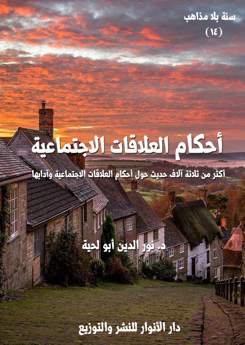
يجمع هذا الكتاب أكثر من ثلاثة آلاف حديث متوافق مع القرآن الكريم، مما يتعلق بالعلاقات الاجتماعية، باعتبارها من الجوانب الأساسية التي تقوم الحياة عليها.
وقد رأينا أن ما ورد في القرآن الكريم والسنة الموافقة له من الحديث عن هذا الجانب يمكن تقسيمه إلى ثلاثة أقسام:
أولها: حديثه عن آداب وأحكام العلاقات العامة بين المسلمين فيما بينهم، أو بينهم وبين غيرهم من البشر، وهي أحكام ترتبط في أكثرها بالنواحي الأخلاقية، والتي لا يمكن أن تخصص بجهة دون جهة، ومنها تحريم الأذى بأنواعه المختلفة، والدعوة إلى الاستغناء والعفاف والسماحة، والدعوة إلى التآلف والملاطفة، والدعوة إلى الإطعام والضيافة وإقامة الولائم والاجتماع في المجالس والدعوة إلى عيادة المرضى، والدعوة إلى الإصلاح والإغاثة، والدعوة إلى أداء الحقوق.
ثانيها: حديثه عن أحكام العلاقات الخاصة وآدابها، وتناولت فيه الأحاديث الواردة حول حقوق الوالدين، والأولاد، والأقارب، والإخوان والأصدقاء، والجيران، والمستضعفين، وعامة المسلمين.. وختمته بالحديث عن حقوق الموتى.
ثالثها ـ أحكام علاقة الزوجية وآدابها: وذلك باعتبار الأسرة هي اللبنة الأساسية التي يتكون منها المجتمع، وقد ذكرنا ما ورد حول تنظيم هذه العلاقة من أحاديث تتناول أحكام الزواج، وأحكام حل عصمة الزوجية.
الكتاب: أحكام الكسب والإنفاق
الوصف: أكثر من ثلاثة آلاف حديث حول أحكام المعاملات المالية كسبا وإنفاقا
السلسلة:سنة بلا مذاهب
المؤلف: د. نور الدين أبو لحية
الناشر: دار الأنوار للنشر والتوزيع
الطبعة الأولى 1442 هـ
عدد الصفحات:590
للمطالعة: هنا
لمطالعة الكتاب من تطبيق مؤلفاتي المجاني وهو أحسن وأيسر: هنا
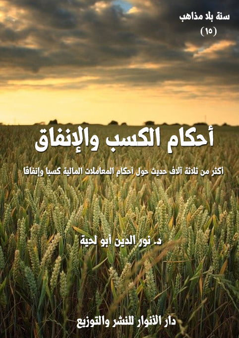
يجمع هذا الكتاب أكثر من ثلاثة آلاف حديث حول الجوانب الاقتصادية الواردة في الأحاديث المرفوعة إلى رسول الله صلى الله عليه وآله وسلم وأئمة الهدى، في المصادر السنية والشيعية.
وقد اخترت تسميته بـ أحكام الكسب والإنفاق]، بدل الممارسات الاقتصادية، وذلك لكونه خاصا فقط بالأحكام العملية المرتبطة بهذه الجوانب، ولا يمكن أن يشمل كل النواحي الاقتصادية لتشعبها، واختلاطها بكل قيم الدين، ابتداء من قيمه العقدية، وانتهاء بقيمه السياسية.
وعند التأمل في كل ما ورد في هذه الجوانب في الشريعة الإسلامية بمصادرها المختلفة، رأينا أنها يمكن أن تحصر في جانبينالكسب، والإنفاق
ذلك أن كل ما ورد في أحكام المكاسب والبيوع والإجارة والكراء والعقود المختلفة..ومثلها ما ورد في الربا والصرف والسلم والشركة والشفعة وغيرها، يمكن إدراجه ضمن باب واحد هو باب الكسب.
ومثل ذلك ما ورد في أحكام الإنفاق، ابتداء من الزكاة بأصنافها وتوابعها المختلفة، وانتهاء بالصدقات والهبات والقروض والوصايا والمواريث وغيرها، يمكن إدراجه ضمن باب واحد هو باب الإنفاق.
وبذلك يكون هذا الكتاب شاملا لكل الأحاديث الواردة في المعاملات المالية والاقتصادية، وبطريقة ميسرة مبسطة، تجمع شتات ما تفرق في الفصول والأبواب المختلفة.
الكتاب:أحكام الحكومة الإسلامية
الوصف: أكثر من ثلاثة آلاف حديث حول أسس الحكومة الإسلامية ومؤسساتها
السلسلة: سنة بلا مذاهب
المؤلف: د. نور الدين أبو لحية
الناشر: دار الأنوار للنشر والتوزيع
الطبعة: الأولى، 1442 هـ
عدد الصفحات: 670
للمطالعة: هنا
لمطالعة الكتاب من تطبيق مؤلفاتي المجاني وهو أحسن وأيسر: هنا
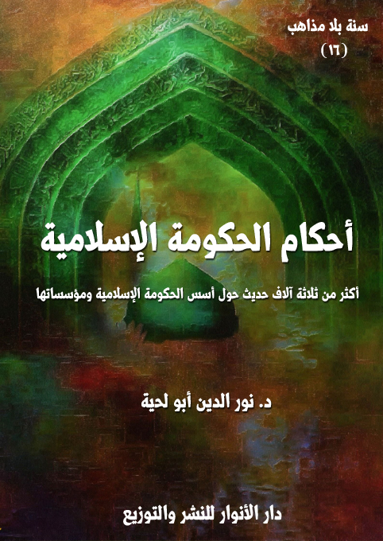
يجمع هذا الكتاب أكثر من ثلاثة آلاف حديث حول الأسس والمؤسسات التي تقوم عليها الحكومة الإسلامية، بالإضافة إلى الأحكام الشرعية المرتبطة بالسعي لتحقيقها على أرض الواقع، والمناهج المعتمدة في ذلك.
وهو يجمع كل ما ورد مفرقا في المصادر الحديثية وغيرها، سواء في أبواب الحسبة والأمر بالمعروف والنهي عن المنكر، باعتبارها تمثل دور الأمة بجميع مكوناتها في تحقيق الحاكمية الإلهية، أو مراقبة مدى تنفيذها.
ومثلها ما ورد في أبواب الخلافة والإمارة والسياسة الشرعية، والتي يوصف فيها عادة أدوار المسؤولين والحكام وصفاتهم.
ومثلها ما ورد في أبواب القضاء والبينات والدعاوى باعتبارها تشكل ركنا أساسيا في الحكومة الإسلامية يهدف إلى تحقيق العدالة والأمن الاجتماعي والقيمي.
ومثلها ما ورد في أبواب الجهاد، والذي يهدف إلى حماية الأمن القومي للحكومة الإسلامية، سواء بمواجهة المعتدين خارجيا، أو البغاة والمعارضة المسلحة داخليا.
ومثلها ما ورد في أبواب الحدود والتعزيرات، والتي تهدف إلى حفظ القيم الأخلاقية والحضارية في الحكومة الإسلامية.
ومثلها ما ورد في أبواب القصاص والديات ونحوها، والتي تهدف إلى حفظ الأرواح والأمن في المجتمع المسلم، ووضع كل القوانين التي تحقق ذلك.
وقد أضفنا إلى ذلك ما ورد من التوجيهات المرتبطة بتحقيق تلك القيم، لأن الحكومة الإسلامية حكومة ربانية تنطلق من الروادع الدينية والأخروية قبل الزواجر القانونية، ومثلها ما ورد في سير الأئمة وورثة النبوة ما يشير إلى النماذج الواقعية لتحقيق الحاكمية الإلهية بأجمل صورها.
الكتاب: أحكام الصلاة وشروطها
الوصف: أربعة آلاف حديث حول أحكام الصلاة وشروطها
السلسلة: سنة بلا مذاهب
المؤلف: د. نور الدين أبو لحية
الناشر: دار الأنوار للنشر والتوزيع
الطبعة: الأولى، 1442 هـ
عدد الصفحات: 747
للمطالعة: هنا
لمطالعة الكتاب من تطبيق مؤلفاتي المجاني وهو أحسن وأيسر: هنا
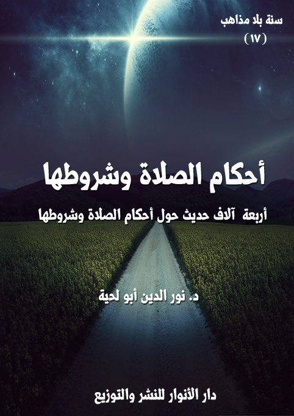
يجمع هذا الكتاب أربعة آلاف حديث حول الصلاة وشروطها وأركانها وسننها وما فرض منها على سبيل الحتم واللزوم، وما أمر به على سبيل التطوع والنافلة.
وهو بذلك يشمل كل الأحاديث التي وردت في الصلاة في المصادر السنية والشيعية، أو أغلبها، ولم نستثن من القبول بعد العرض على القرآن الكريم إلا القليل جدا، بناء على أن جميع تلك الأحاديث، وإن اختلف بعضها مع بعض؛ فإن ذلك الاختلاف صوري يدل على التنوع ورفع الحرج، لا على اختلاف التعارض والتضاد.
ولذلك لم نر مسوغا لإلغاء بعض الأحاديث أو أحكامها بناء على تعارضها مع غيرها، وإنما اعتبرنا الجميع مقصودا لذاته، لأن الصلاة وشروطها ليست على صيغة واحد، بل هي على صيغ متعددة، يمكن اختيار أي صيغة منها، أو التنقل بينها جميعا، لينفى بذلك الملل الذي قد يعرض بسبب اختيار صورة واحدة، أو الحرج الذي قد يعرض لمن يلتزم صورة معينة مشددة.
الكتاب: الصيام ونفحات الأزمنة
الوصف: ألفا حديث حول أحكام الصيام وأعمال الأزمنة المباركة
السلسلة: سنة بلا مذاهب
المؤلف: د. نور الدين أبو لحية
الناشر: دار الأنوار للنشر والتوزيع
الطبعة: الأولى، 42 هـ
عدد الصفحات: 453
للمطالعة: هنا
لمطالعة الكتاب من تطبيق مؤلفاتي المجاني وهو أحسن وأيسر: هنا
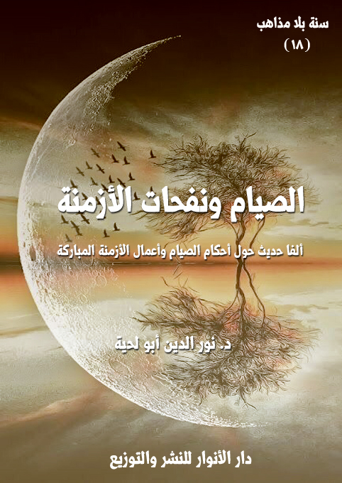
يجمع هذا الكتاب ألفي حديث حول الصيام ونفحات الأزمنة والأعمال المرتبطة بها، وقد جمعنا بينهما في محل واحد، لأن أكثر الأعمال المرتبطة بالأيام المباركة يتضمن صياما، والصيام نفسه مرتبط بالزمن والمواقيت.
ولذلك كانت نفحات الأزمنة أقرب إلى الصيام منها إلى سائر الأعمال، كما أن نفحات الأمكنة أقرب إلى الحج منها إلى سائر الأعمال، ولذلك جعلنا الحج مع نفحات المكان، والصيام مع نفحات الزمان.
وقد اخترنا هذه التسمية بناء على ما ورد في الحديث من قول رسول الله صلى الله عليه وآله وسلم: (إن لربكم في أيام دهركم نفحات، فتعرضوا لها، لعله أن يصيبكم نفحة منها فلا تشقون بعدها أبدًا)
وبخصوص نفحات الأزمنة، قسمنا الحديث عنها إلى قسمين:
أولهما: الأحاديث المقبولة في فضائل الأزمنة وأعمالها، وهي تلك التي تتأسس أعمالها على أصول صحيحة متفق عليها في الأغلب.
ثانيهما: الأحاديث المردودة، وهي تلك التي وضعت بلا سند في العصور المتأخرة، ووضعت لها الفضائل الكثيرة، وكانت سببا في الانحراف عن الدين الأصيل بسماحته ومقاصده.
الكتاب الحج ونفحات الأمكنة
الوصف ثلاثة آلاف حديث حول الحج وفضائل الأماكن المقدسة
السلسلة سنة بلا مذاهب
المؤلف د. نور الدين أبو لحية
الناشر دار الأنوار للنشر والتوزيع
الطبعة الأولى، 42 هـ
عدد الصفحات 593
للمطالعة: هنا
لمطالعة الكتاب من تطبيق مؤلفاتي المجاني وهو أحسن وأيسر: هنا
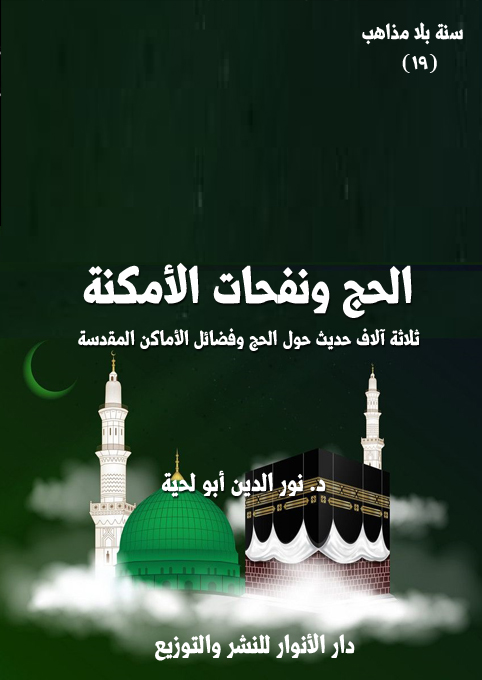
يجمع هذا الكتاب ثلاثة آلاف حديث حول الحج ونفحات الأمكنة وفضلها والأعمال المرتبطة بها، وقد جمعنا بينهما في محل واحد بناء على المفهوم الشرعي للحج، بل اللغوي أيضا؛ فهو يعني قصد محال معينة لإقامة شعائر تعبدية خاصة، ولذلك فإن الحج مرتبط بالمكان، مثل ارتباط الصيام بالزمان.
وقد قسمناه إلى أربعة فصول، كما يلي:
الفصل الأول: تناولنا فيه [الأحكام التكليفية للحج]؛ فذكرنا ما ورد حول فضل الحج ومقاصده.. وما ورد حول حكم الحج والعمرة.. وما ورد حول حكم النيابة في الحج.
الفصل الثاني: تناولنا فيه [كيفية الحج وأحكامها]؛ فذكرنا ما ورد حول أنواع الحج وكيفياتها.. وما ورد حول مواقيت الحج وأحكامها.. وما ورد حول الإحرام وأحكامه.. وما ورد حول الطواف والاستلام.. وما ورد حول السعي بين الصفا والمروة.. وما ورد حول الوقوف بعرفة وما يتعلق به.. وما ورد حول يوم النحر وما بعده.. وما ورد حول أحكام الحلق والتقصير.. وما ورد حول رمي الجمار.. وهي جميعا تشمل كل التفاصيل المتعلقة بكيفية الحج، مع الإجابة عن كل الاستفتاءات والإشكالات المرتبطة بها.
الفصل الثالث: تناولنا فيه [موانع الحج وما يترتب عليها]؛ فذكرنا ما ورد حول موانع الحج.. وما ورد حول كفارات الموانع.. وما ورد حول أحكام الهدي والأضاحي.. وما ورد حول أحكام الصيام بدل الهدي.
الفصل الرابع: تناولنا فيه [الأماكن المباركة وفضل زيارتها]؛ فذكرنا ما ورد حول فضل المساجد وآدابها.. وما ورد حول المساجد المباركة ونفحاتها.. وما ورد حول الأضرحة المباركة وزيارتها.
الكتاب: معارج الذكر والدعاء
الوصف: ثلاثة آلاف وخمسمائة حديث حول أنواع الأذكار والأدعية وفضائلها
السلسلة: سنة بلا مذاهب
المؤلف: د. نور الدين أبو لحية
الناشر: دار الأنوار للنشر والتوزيع
الطبعة: الأولى، 1442 هـ
عدد الصفحات: 833
للمطالعة: هنا
لمطالعة الكتاب من تطبيق مؤلفاتي المجاني وهو أحسن وأيسر: هنا
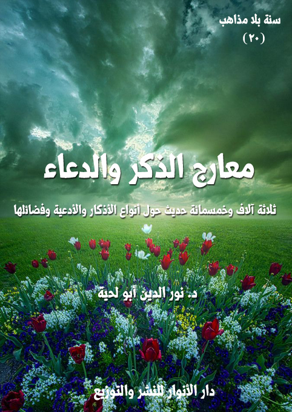
يجمع هذا الكتاب ثلاثة آلاف وخمسمائة حديث حول الذكر والدعاء، إما بالدعوة إليهما، والترغيب فيهما، وبيان الفضل المتعلق بهما، أو ببيان الهيئات التنفيذية لذلك.
وقد أوردنا فيه الصيغ المختلفة للأذكار والأدعية، سواء تلك التي رويت عن رسول الله صلى الله عليه وآله وسلم مباشرة، أو رويت عن ورثته من أئمة الهدى، والمتوافقة جميعا مع القرآن الكريم.
وقد اخترنا تسميته بـ[معارج الذكر والدعاء]، باعتبارهما ليسا مجرد ألفاظ تردد، وإنما هما معارج ووسائل لتحقيق كل الغايات الكبرى المرتبطة بالسير الصعودي التكاملي للإنسان.
ولهذا يُطلق على الدعاء لقب [القرآن الصاعد]، لأنه يعبر عن حاجات العبد التي يطلبها من ربه، كما أن القرآن المتنزل على رسول الله صلى الله عليه وآله وسلم يعبر عن القيم والتكاليف التي يطلبها الله من عباده.
وبما أن الذكر والدعاء قد يقع فيهما الكثير من الأخطاء المرتبطة بمعرفة الله تعالى، أو كيفية التوجه إليه؛ فقد ورد في المأثور عن رسول الله صلى الله عليه وآله وسلم وأئمة الهدى ما يكفي للتدريب على ذلك، أو ما يكفي للاكتفاء به.
بل إن أذكارهم وأدعيتهم مدرسة متكاملة في المعرفة بالله وحقوقه، والتأدب معه، وكيفية السير إليه، وغيرها من النواحي حتى تلك التي ترتبط بالحاجات المختلفة.
لذلك أوردنا في هذا الكتاب أكثر ما وجدناه منها، مع التنبيه إلى أنا قطعنا الأحاديث الطويلة في الأدعية إلى قطع قصيرة، يسهل حفظها أو الدعاء بها، وقد اعتمدنا في ذلك على انتهاء المعنى في كل قطعة.